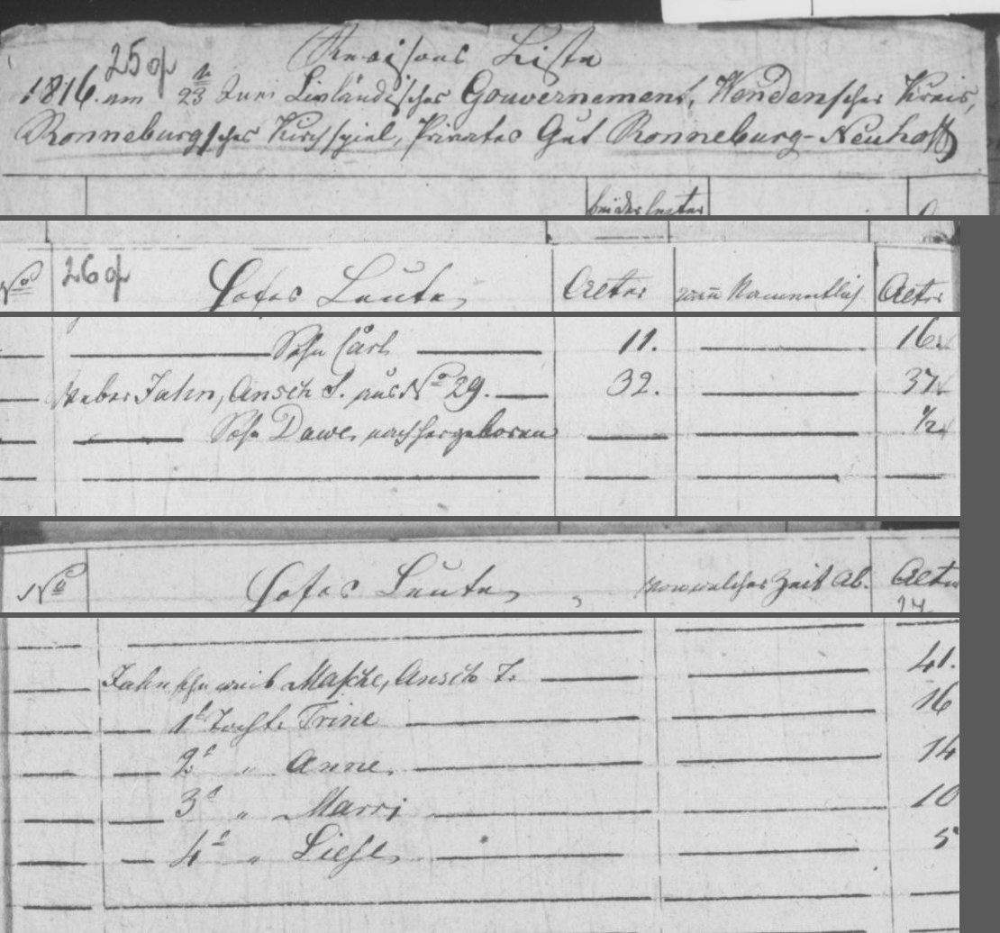
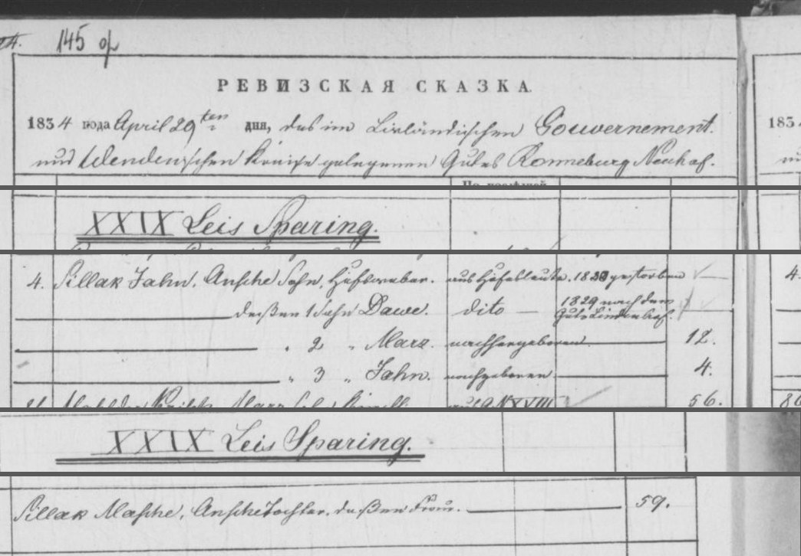

Dāvis Sirlaks b. 1815
Peter's 4× great-uncle.
Dāvis Sirlaks was born between 1815 and 1816 in Jaunrauna, Rauna, Cēsis district, Vidzeme, Latvia2, the son of Jānis Sirlaks and Masche7,8. He has died (according to an online family tree)6, but the date of death is not yet documented.
Family
- Parents
- Jānis Sirlaks 1779–1830 and Masche b. 1775 documented
Life events
| Event | Date | Place and details |
|---|---|---|
| Born | bet 1815 and 1816 | Jaunrauna, Rauna, Cēsis district, Vidzeme, Latvia Preferred version: The primary 1816 Jaunrauna soul revision (LVVA f. 199, apr. 1, l. 376, image 31) enumerates him at age ½ ('Sohn Dawe, nachhergeboren, ½'); Raimonds Voroņins's tree has an unsourced estimate c. 1825.2 |
| Lived | bet 1816 and 1829 | Lejas-Spāriņi farm, Jaunrauna, Rauna, Cēsis district, Vidzeme, Latvia4 |
| Born | abt 1825 | According to an online family tree3 |
| Lived | 1829 | Liepa, Cēsis district, Vidzeme, Latvia According to an online family tree5 |
| Died | not yet documented | According to an online family tree6 |
Records


Sources
- MyHeritage family tree 'Dzimta' of Peter's third cousin (his family site), member GEDCOM export of 26 Oct 2026, I500774 (person-6500774), GEDCOM lines 21035–21046.
NAME Dāvis /Sirlaks/
- 1816 Jaunrauna soul revision — Hofsleute, Sohn Dawe.
Weber Jahn, Ansch S., a. d. No. 29 | 32. | 37. / Sohn Dawe, nachhergeboren | ½ — Jahns Eheweib Masche, Ansch T. | 41.
Born c. 1815/1816 and enumerated at age ½ ('Sohn Dawe, nachhergeboren, ½') with his parents Weber Jahn (Ansch's son) and Masche (Ansch's daughter) among the manor people (Hofsleute) of Jaunrauna in the 1816 soul revision (whereas Raimonds Voroņins's tree estimates c. 1825).
- MyHeritage family tree 'Dzimta' of Peter's third cousin (his family site), member GEDCOM export of 26 Oct 2026, I500774 (person-6500774), GEDCOM lines 21035–21046.
BIRT · ABT 1825
- 1834 Jaunrauna soul revision — Farm XXIX Lejas Spāriņi, Family 4.
4. Sillak Jahn, Ansche Sohn, Hofsweber[?] | aus Hofsleute[?] | 1830[?] gestorben / dessen 1 Sohn Dawe | dito | 1829 nach dem Gute Lindenhof[?]
Entered with his parents and younger brothers Mārcis and Jānis under Family 4 at Farm XXIX Lejas Spāriņi in the 1834 Jaunrauna soul revision before transferring to the Liepa (Lindenhof) estate in 1829.
- MyHeritage family tree 'Dzimta' of Peter's third cousin (his family site), member GEDCOM export of 26 Oct 2026, I500774 (person-6500774), GEDCOM lines 21035–21046.
1829.gadā pārceļas uz Liepu
His note: in 1829 he moves to Liepa.
- MyHeritage family tree 'Dzimta' of Peter's third cousin (his family site), member GEDCOM export of 26 Oct 2026, I500774 (person-6500774), GEDCOM lines 21035–21046.
DEAT · Y (marked deceased; no date or place)
- MyHeritage family tree 'Dzimta' of Peter's third cousin (his family site), member GEDCOM export of 26 Oct 2026, family F25: I500774 Dāvis Sirlaks, child of I73 Jānis Sirlaks × I500606 Masche.
Our 1816 Jaunrauna revision lists 'Sohn Dawe, nachhergeboren, ½' (son Dāvis, born since 1811, ½) under Jahn; his tree has Dāvis b. c. 1825, which does not fit a half-year-old in 1816.
- Jaunrauna estate revision 1816, manor people, LVVA f. 199, apr. 1, l. 376, image 31 (fol. 26); farm 29 on image 54 (fol. 49), LVVA f. 199, apr. 1, l. 376, image 31.
Weber Jahn, Ansch S., a. d. No. 29 | 32. | 37. / Sohn Dawe, nachhergeboren | ½ — Jahns Eheweib Masche, Ansch T. 41
Translation: Weaver Jahn, son of Ansis, from no. 29, 32 [in 1811], 37 [now]; son Dāvis, born since, ½. Jahn's wife Masche, daughter of Ansis, 41.
1816 revision (7th), manor people: weaver Jahn, son of Ansch (Ansis), from farm no. 29, aged 32 in 1811 and 37 in 1816 (b. c. 1779); son Dawe, born after 1811, ½. Wife Masche, daughter of Ansch, 41 (b. c. 1775); daughters Trine 16, Anne 14, Marri 10, Liese 5. No surname yet (surnames were assigned in Livonia c. 1822–1826). Also on farm 29 (image 54): farmhand Jahn son of Ansch 'in B', son Peter d. 1814; and young Jahn son of Ansch 'in No. 20'. Died 1830[?] per the 1834 list.